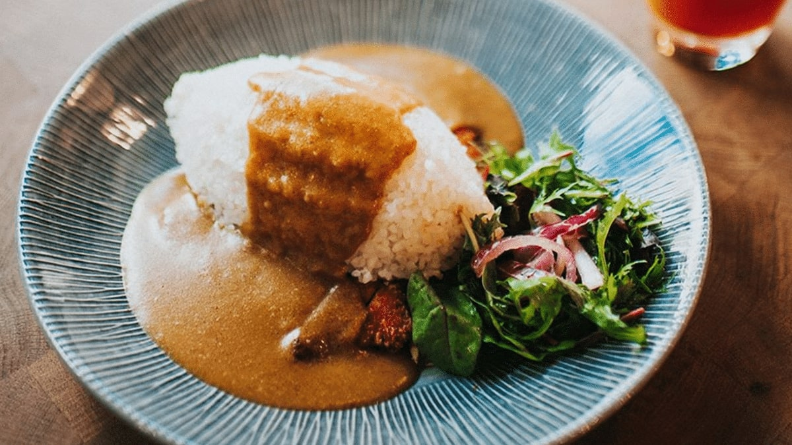

Katsu Curry

Ingredients
For the chicken katsu...
- Chicken breasts
- breadcrumbs
- A beaten egg
- Oil for frying
For the curry sauce...
- Minced garlic
- Minced ginger
- Soy sauce
- Japanese curry cubes
- Brown sugar
Steps
For the Chicken Katsu...
- season the chicken breasts with salt and pepper.
- Dredge each chicken breast in all-purpose flour, ensuring they're evenly coated.
- Fry in oil until golden and cooked through.
For the sauce
- Saute minced garlic and ginger in oil
- Add soy sauce, cubes and brown sugar to taste
- Gradually add water until sauce is smooth and cubes have simmered.
To serve
- Slice chicken katsu into strips
- Served over cooked white rice
- Pour sauce over chicken and rice
- Optionally, serve with salad
Full video recipe: